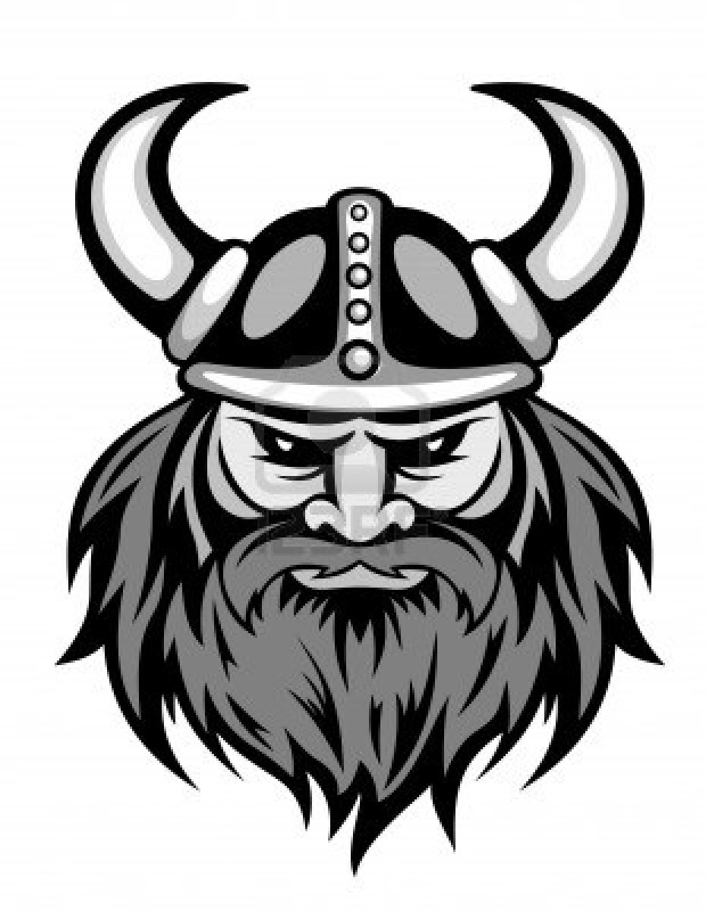

dudes. stop by and say hi.

Tony Bacigalupo
For the past five years, I have run a coworking space called New Work City in NYC. Completely free of outside influence and open to all, it is the result of the collective participation and support of a wide array of community members who share a common desire to share and collaborate in a new way.
I also teach an online course in community building alongside my good friend Alex Hillman. It’s called the Community Builders Masterclass, and I’m really enjoying having the opportunity to work with amazing people all over the world.
Kevin Galligan
Kevin has been coding since he was 8. He's held various corporate positions, and had some small startups with varying success. A few years ago he started and currently runs TouchLab, NYC's premiere Android development and consulting shop.
Kevin also plays in a band. Insists on weird musical acts for the funeral.
Jason Kende
On a mission to help amazing people connect, discover and share their strengths. In love with ecosystems of innovation, across boundaries and borders.
Jason Nadaf
Entrepreneur, developer, and engineer by nature striving to build innovative internet technologies and solutions that either haven't been done before, or that need to be done better.
Spend most of my time developing an easy to use software as a service for web publishing and building ecommerce storefronts that sync with multiple channels such as Amazon, eBay, Google Products, and Facebook - SureDone.
Leo Newball
I believe in three things: Development, Design, and Data. I believe in the power of Web Development, and any solution can be conquered using a breadth of web-based tools and technology. I believe in the power of great Web Design, believing that both the code and the presentation can be well-organized, presented, and provide amazing experiences. I believe in the power of asking questions, performing Data Research, analyzing the results, and presenting them in ways best disseminated for public use.
Valerie
Spent college summers deploying toy monkeys in Ohio. Spent 2001-2008 building puppets in Phoenix, AZ. Spent 2002-2009 lecturing about Easter candy for the underprivileged. Had moderate success selling sock monkeys in Fort Lauderdale, FL. Had some great experience marketing cabbage in Edison, NJ. What gets me going now is lecturing about foreign tangerines in Bethesda, MD.